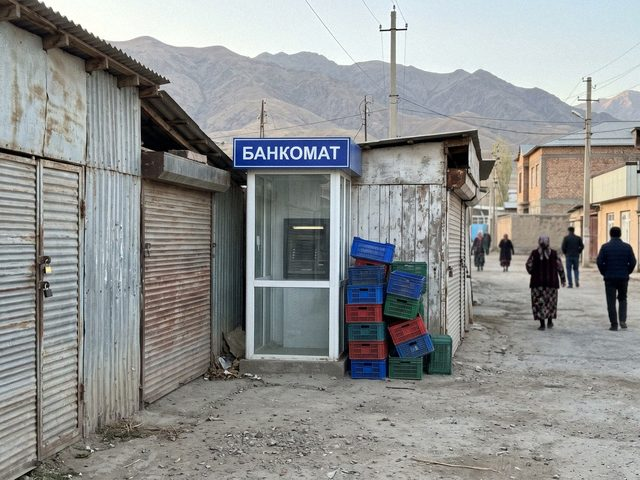

notes of a bank IT guy in Talas. plain, since 2022.
2025-06-22 · work
There is a machine at the Bazar-i Kalan that is used 31,000 times a month. It lives in a small glass booth between two stalls. It has a smell of apricots, dust and diesel. In summer it breaks every second Tuesday.

the booth at 7:50 a.m., before the bazaar opens. The machine is waiting.Today I replaced its fan for the third time this year. A stall owner gave me a pear. I did not ask why. You do not ask why when someone gives you a pear.